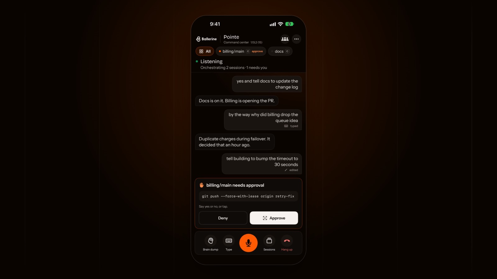
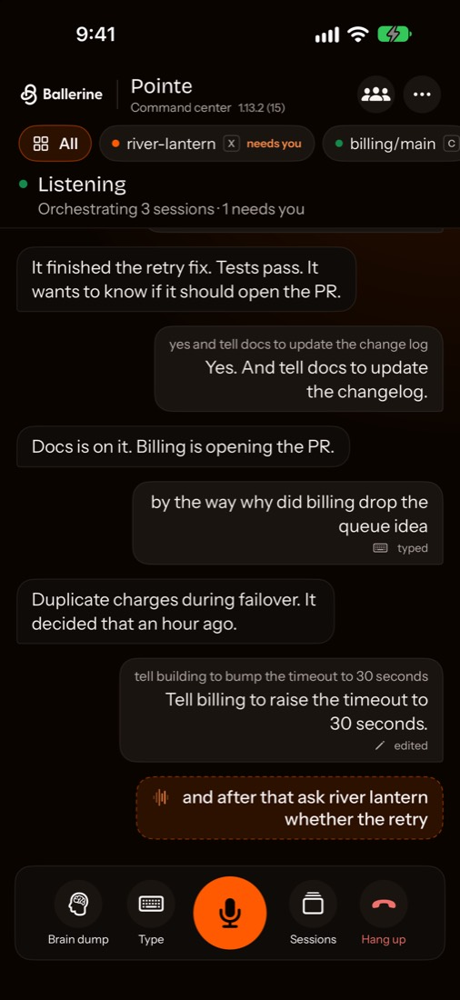
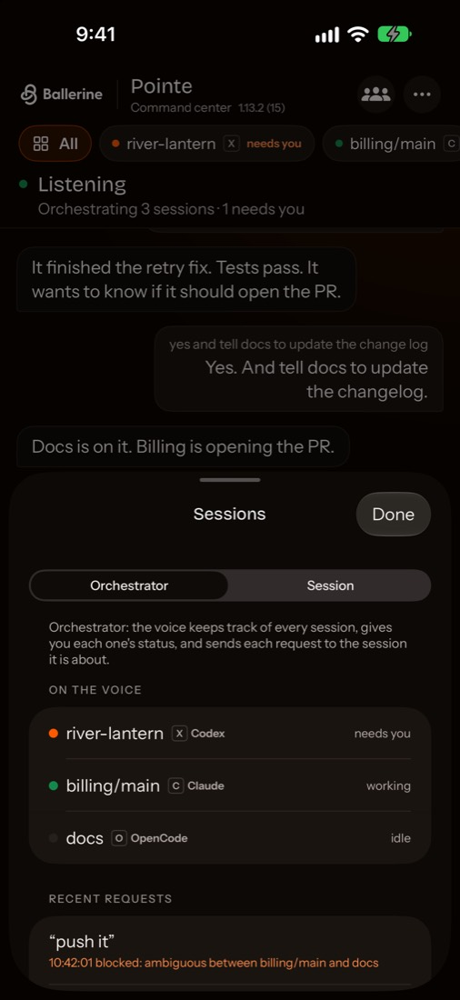
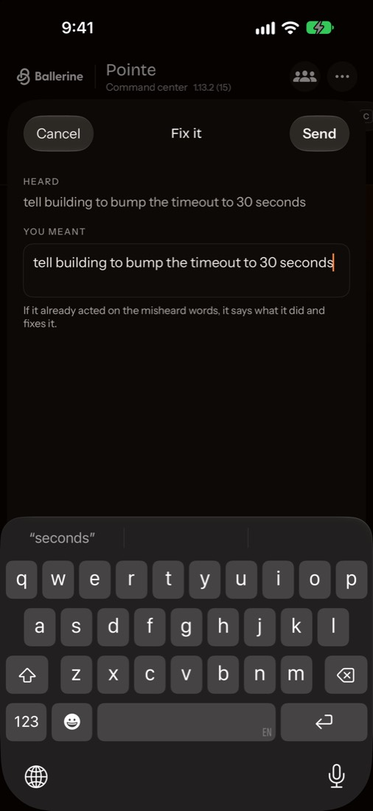

Chrome page on the Mac
Loopback only. Live transcript, the exact text of each pending request, Approve and Deny.
Open source · MIT · runs on your Mac
Ask what each one did, switch by saying its name, and answer permission prompts out loud, from across the room, under rules enforced in code. It works with Claude Code, OpenCode and Codex, with no server and no account: you bring the model keys, or run every model on your Mac.
claude plugin marketplace add https://github.com/ballerine-io/pointe.git && claude plugin install pointe@pointe
Demo video coming before launch
One conversation
Pointe is one voice that knows every session you join to it. Each session keeps its own context and keeps working. Background sessions stay quiet except for "finished" or "needs approval". A "by the way" question is answered from a read-only copy, so the live session is never interrupted.
An example call
How it works
A Python daemon built on Pipecat runs the call. The voice reaches it from a Chrome tab on the Mac or from the iPhone app. Each session you join gets an adapter that follows its record, sends your requests to it, and holds its permission prompts.
You
Chrome page on the Mac
Loopback only. Live transcript, the exact text of each pending request, Approve and Deny.
iPhone app
Paired once by QR code over Tailscale, a VPN or Wi-Fi, with a pinned TLS certificate. Approve needs Face ID.
one WebSocket per call: audio both ways, status and taps
The daemon on your Mac, the hub
Approvals
The read-out allowlist, the bound yes, the tap, the optional voice lock (a local model).
Gate
Each send to a session is checked against what you just said.
Reader
Session notes, reports, briefings, conflict checks, meeting notes.
one adapter per session: watch its record, send to it, hold its permission prompts
Your sessions
Claude Code
Joined with /pointe:voice. Approvals through its PermissionRequest hook.
OpenCode
Version 2. Joined with pointe join opencode.
Codex CLI
Started as codex --remote unix://, joined with pointe join codex.
Other machines
A node on another Mac or a Linux host runs the same adapters, with no audio and no keys, over a pinned, authenticated link.
Features
One voice over many sessions
Say a session's name to talk to it or switch to it. Ask what is going on across all of them.
Session notes
A reading model keeps each session's goal, state, decisions, what was ruled out and what is open, and turns each final message into what you need to hear.
Side questions
"By the way" questions go to a read-only copy of the session, so the live one keeps working and gets no new message.
Live transcript
The page shows the conversation as it happens and lets you type or correct what was heard.
iPhone app
The same call and controls on your phone. Approve needs Face ID.
Several harnesses and machines
Claude Code, OpenCode and Codex side by side in one call, each session with its own approvals, on this Mac or on other machines.
Each feature page says how to use it, the rules, what was measured, and the limits.



Safety model
Words you speak can make a session do work, so the rules are in code with tests, not in a prompt.
What can approve
$, globs, subshells, several lines, sudo, more than 25 words) is approved only this way.What never approves
Always
password= is never read out or put in a briefing, and is masked on screen.About 13%
of shell commands in our own Claude Code history can be read out, so most commands need a tap. That is deliberate.
Set "approvals": "terminal" in ~/.claude-voice/config.json to keep every prompt in the terminal. The daemon listens on loopback only, every route needs a secret, and Origin must match Host. The threat model, including what Pointe does not defend against: SECURITY.md.
Privacy
Pointe has no server and no telemetry, and the call page loads nothing from outside your Mac. What leaves the Mac goes to the vendors you chose, under your own keys.
| What | Goes to |
|---|---|
| Your speech, plus hints: your dictionary, session and folder names, names from session notes | The ears vendor: Soniox, Google Gemini, OpenAI or ElevenLabs |
| Session content: transcripts, notes, reports, briefings, conflict checks | The brain and reader vendors: Anthropic, Google Gemini or OpenAI |
| What the bot says, which can quote session content | The mouth vendor: ElevenLabs, Google Gemini, Soniox or OpenAI |
| What you said, each session's latest lines, goal, folder path and up to 40 file names | The gate vendor |
| In a meeting you started: the room's audio, and transcript windows | Soniox, and the reader vendor |
pointe local voice: voice stays on your Mac
Whisper hears and Kokoro speaks on the Mac. No audio goes to any vendor, and meeting mode is off. Your words reach the brain, reader and gate vendors as text.
pointe local: fully local
Whisper, Kokoro and Gemma 4 26B A4B on the Mac, and no key is read. Needs an Apple-silicon Mac with 32 GB of memory and about 19 GB of disk. Slower and less accurate, by measure: local.md.
Always on the Mac
Your voiceprint, the call journal, session notes, the dictionary, briefings and the files shown on screen. Keys come from the environment or the macOS Keychain and reach the daemon only.
With push to talk on, no audio leaves the Mac unless you hold the talk control (plus 0.4 s after release). Full list: SECURITY.md. This page has no analytics and loads nothing from other hosts.
Measured latency
1.86 s
median
24 turns on a real call
2.21 s
p90
slowest turn 4.19 s
3.17 s
median before 1.14.0
p90 4.27 s, 12 turns
How it was measured
tests/e2e/latency.py asks twelve plain questions on a real call, with a synthesized voice as
the user, and stamps each turn stage by stage. Real vendors: Claude Sonnet 5.5 as the brain, Soniox ears,
ElevenLabs mouth. One 18-core Mac that other work kept busy (load 4.2 rising to 7.6). It is reproducible with
your own keys; it calls paid APIs.
Source: conversation-flow.md §7.
| Stage | Median | p90 |
|---|---|---|
| Ears: last word to final transcript | 0.46 | 0.52 |
| The turn is taken, after the last word | 1.08 | 1.10 |
| Model: request to first token | 0.74 | 0.82 |
| Mouth: request to first audio | 0.22 | 0.33 |
| Client: playing to audible | 0.07 | 0.11 |
| Last word to first sound | 1.86 | 2.21 |
Install
You need macOS, Claude Code 2.1.224 or newer, Chrome, headphones, and one model key, or an Apple-silicon Mac with 32 GB of memory for the fully local mode.
Install the plugin
claude plugin marketplace add https://github.com/ballerine-io/pointe.git && claude plugin install pointe@pointeRun setup in a new Claude Code session
/pointe:setupIt checks your Mac, installs uv if it is missing, helps you choose vendors (with measured quality and cost), stores each key in the macOS Keychain through a Mac window (never in the chat), starts your first call, and can pair your phone.
Join each session you want to reach
/pointe:voiceThe first run downloads about 180 MB. A tab opens: allow the microphone, press Connect, and talk. OpenCode and Codex sessions join with pointe join opencode or pointe join codex.
You pay the vendors directly. A busy hour costs about $1 on the best measured setup (Anthropic, Soniox, ElevenLabs and Gemini keys), by arithmetic from measured use and list prices, not a metered bill. Other setups: benchmarks.md. More install options, including the Claude desktop app: install.md.
Compared to
Pointe is not the first tool to read permission requests aloud. These are the closest, described from their public documentation, read on 2026-11-19.
Happy
Open source (MIT). Voice docs · repository
happy claude or happy codex; a relay server syncs your devices, end-to-end encrypted.Where Happy is ahead: store apps for iPhone and Android, more platforms, and many more users (over 24,000 GitHub stars).
Where Pointe differs: the approval rules are code with tests, and a request the daemon cannot read out word for word needs a tap. There is no relay server, account or subscription: the daemon runs on your Mac and you pay each vendor directly, or run every model locally. Claude Code and OpenCode sessions you already run join as they are; Codex must be started with --remote. Each session gets notes, and side questions go to a read-only copy.
Claude Code /voice
Built into Claude Code. Voice dictation docs
Where /voice is ahead: nothing to install, no model keys, and more platforms.
Where Pointe differs: it talks back. One spoken conversation covers several sessions and harnesses, reports what each did, and reads approvals out for a yes or a tap.
Limits